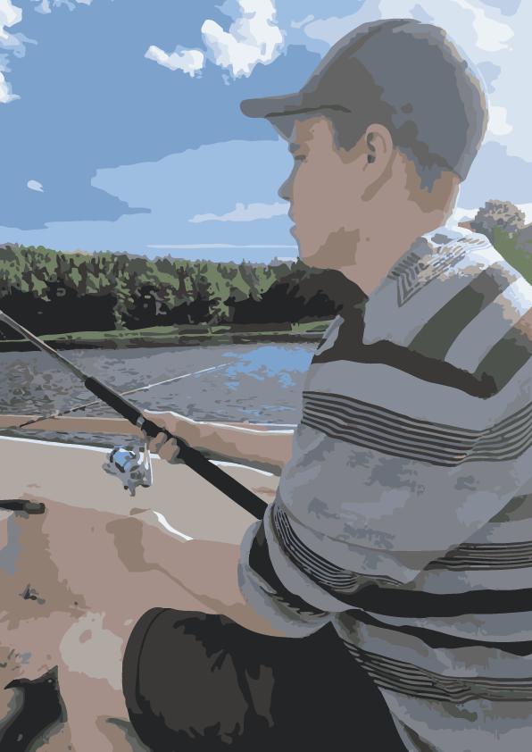

Regarding me
My biggest source of work experience is as a previously employed care assistant, fitter and with a multitude of different roles as an employee at Niotek IT AB.
My duties as a fitter at Trumslagarna AB consisted largely of inspecting purchase orders. I used machine cutting and sheet metal scissors to make ventilation frames. Precision and accuracy were important as different lengths and widths had to be provided depending on the instructions on the purchase orders. With my high school education in the community program with a specialization in behavioral science, I have a good knowledge of human mental health and I use this knowledge in my work as a care assistant in Ludvika municipality.
During my time working at Niotek IT AB I had the ability to use and further develop my skills with computer support and repair with both hardware and software.
I spend a good part of my freetime infront of my computer screen or at the gym. During the cold winters I rather stay inside with family or friends and during the summers I like to go fishing or driving my motorcycle.
